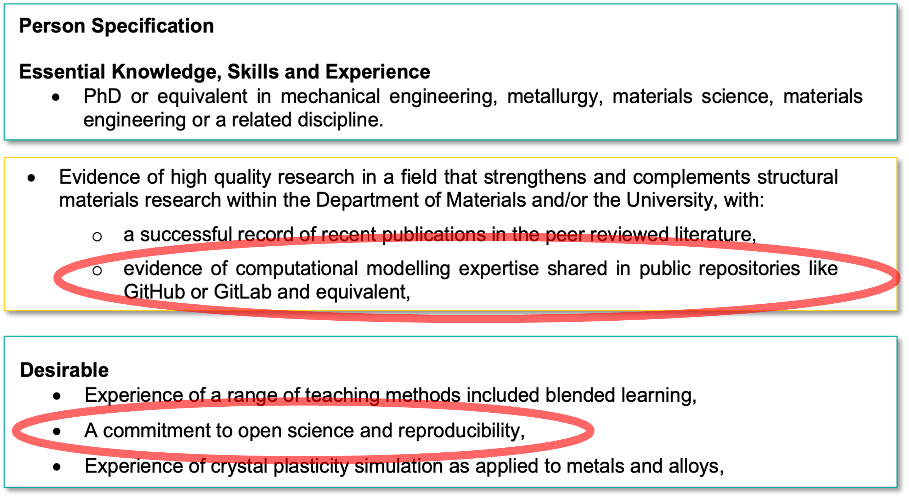

Open Research in Practice
Actionable tips for Materials Scientists
Stavrina Dimosthenous
Henry Royce Institute, University of Manchester
2024-12-09
What is Open Research
Definition
A set of principles and practices in publicly funded research that make it more transparent, accessible, inclusive, and collaborative, ensuring that research is freely available, under terms that enable attribution, reuse, redistribution and reproduction of the research and its underlying data and methods. [1], [2]
Aspects and application
Open Research extends across:
- Open access
- Data
- Methodology
- Open source
- Peer review
- Educational resources
Open Research Examples
Examples in Materials Science
{kind=link}
{kind=link}
{kind=link}
{kind=link}
Examples from publishers
Open peer-review
{kind=link}
Why Open Research
Do I have to do open research?
Barriers
- It takes time
- It needs to be perfect
- I might get scooped
- But!
- This does not contribute to my career advancement
Considerations
As open as possible
As closed as necessary
What is in it for me?
What is in it for me?
Your next role might depend on your open research practices

What is in it for me?
Good for everyone
Good for you
How to do Open Research
What can you do right now?
- Register for ORCID
- Share your presentations openly
- Add a license to your presentation!
- Share your code and scripts on GitHub (with appropriate reuse licensing)
- Share your Author Accepted Manuscript on a public repository
Thank you
Questions?
References
[1]
FOSTER Open Science, “What is open science?” 2018. doi: 10.5281/zenodo.2629946. Available: https://www.fosteropenscience.eu/taxonomy/term/7
[2]
FOSTER Open Science, “Open science definition.” Available: https://www.fosteropenscience.eu/taxonomy/term/100
[3]
F. Bachmann, R. Hielscher, and H. Schaeben, “Texture analysis with MTEX – free and open source software toolbox,” Solid State Phenomena, vol. 160, pp. 63–68, Feb. 2010, doi: 10.4028/www.scientific.net/ssp.160.63
[4]
Adam Plowman, Peter Crowther, João Quinta da Fonseca, and Michael Atkinson, “LightForm-group/matflow: v0.2.27.” Zenodo, 2024. doi: 10.5281/ZENODO.12545528
[5]
S. Gorsse, M. H. Nguyen, O. N. Senkov, and D. B. Miracle, “Database on the mechanical properties of high entropy alloys and complex concentrated alloys,” Data in Brief, vol. 21, pp. 2664–2678, Dec. 2018, doi: 10.1016/j.dib.2018.11.111
[6]
S. Gorsse, M. H. Nguyen, O. N. Senkov, and D. B. Miracle, “Corrigendum to database on the mechanical properties of high entropy alloys and complex concentrated alloys, data in brief 21 (2018) 2664–2678,” Data in Brief, vol. 32, p. 106216, Oct. 2020, doi: 10.1016/j.dib.2020.106216
[7]
R. Machaka, G. T. Motsi, L. M. Raganya, P. M. Radingoana, and S. Chikosha, “Machine learning-based prediction of phases in high-entropy alloys: A data article,” Data in Brief, vol. 38, p. 107346, Oct. 2021, doi: 10.1016/j.dib.2021.107346
[8]
D. L. Olmsted, S. M. Foiles, and E. A. Holm, “Survey of computed grain boundary properties in face-centered cubic metals: I. Grain boundary energy,” Acta Materialia, vol. 57, no. 13, pp. 3694–3703, Aug. 2009, doi: 10.1016/j.actamat.2009.04.007
[9]
D. L. Olmsted, E. A. Holm, and S. M. Foiles, “Survey of computed grain boundary properties in face-centered cubic metals—II: Grain boundary mobility,” Acta Materialia, vol. 57, no. 13, pp. 3704–3713, Aug. 2009, doi: 10.1016/j.actamat.2009.04.015
[10]
FORRT - Framework for Open and Reproducible Research Training, “FORRT glossary - open science,” Jul. 2021. Available: https://forrt.org/glossary/open-science/
[11]
Jisc, “Open research.” Available: https://www.jisc.ac.uk/open-research
[12]
“JPL open source rover project,” 2018. Available: https://github.com/nasa-jpl/open-source-rover
[13]
UKRI, “EPSRC Policy Framework on research data.” https://www.ukri.org/who-we-are/epsrc/our-policies-and-standards/policy-framework-on-research-data/, Nov. 09, 2023.
[14]
UKRI, “Principles of EPSRC research data policy framework.” https://www.ukri.org/who-we-are/epsrc/our-policies-and-standards/policy-framework-on-research-data/principles/, Mar. 31, 2022.
[15]
A. B. Downey, “Think bayes,” 2021. Available: https://allendowney.github.io/ThinkBayes2/
[16]
A. B. Downey, “Free books, why not?” Available: https://greenteapress.com/free_books.html
This work by Stavrina Dimosthenous is licensed under CC BY-NC-SA 4.0